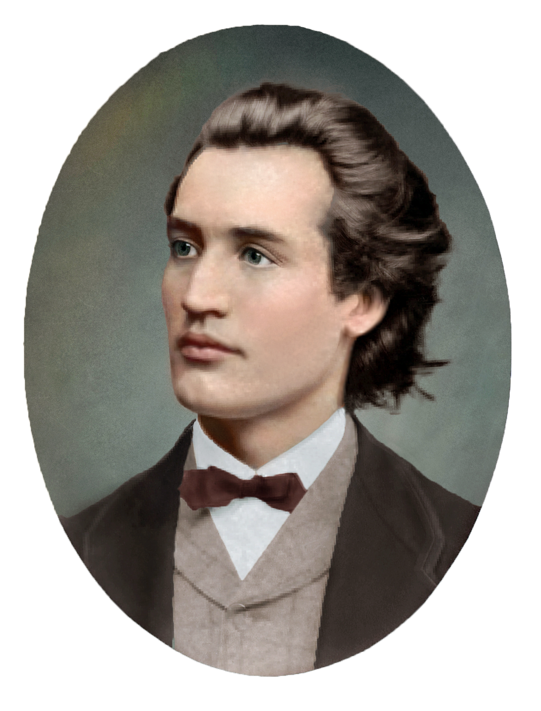

Three Poets

Ianuarie 15, 1850 – Iunie 15, 1889
Stuff about Eminescu.
More stuff.
A fost un poet, prozator și jurnalist român, socotit de cititorii români și de critica literară postumă drept cea mai importantă voce poetică din literatura română. Receptiv la romantismele europene de secol XVIII și XIX, a asimilat viziunile poetice occidentale, creația sa aparținând unui romantism literar relativ întârziat. În momentul în care Mihai Eminescu a recuperat temele tradiționale ale Romantismului european, gustul pentru trecut și pasiunea pentru istoria națională, căreia a dorit chiar să-i construiască un Pantheon de voievozi, nostalgia regresivă pentru copilărie, melancolia și cultivarea stărilor depresive, întoarcerea în natură etc., poezia europeană descoperea paradigma modernismului, prin Charles Baudelaire sau Stéphane Mallarmé, bunăoară. Poetul avea o bună educație filosofică, opera sa poetică fiind influențată de marile sisteme filosofice ale epocii sale, de filosofia antică, de la Heraclit la Platon, de marile sisteme de gândire ale romantismului, de teoriile lui Arthur Schopenhauer, Immanuel Kant (de altfel Eminescu a lucrat o vreme la traducerea tratatului acestuia Critica rațiunii pure, la îndemnul lui Titu Maiorescu, cel care îi ceruse să-și ia doctoratul în filosofia lui Kant la Universitatea din Berlin, plan nefinalizat până la urmă) și de teoriile lui Hegel.Even more stuff.
Strămoșii paterni ai poetului se presupune că provin dintr-o familie românească din Banatul ocupat de turci. Acolo la 1675 s-a născut un copil care adult fiind a fost poreclit Iminul, fiul lui Iminul a fost Iovul lui Iminul, născut la 1705, care a fost hirotonisit ca preot sub numele sârbizat de Iovul Iminovici, în conformitate cu uzul limbii slavone al cancelariei mitropoliei de la Carloviț. Din cauza războiului ruso-austriaco-turc din 1735-1739, în urma căruia Banatul și alte regiuni, abia cucerite de la turci în 1716-1718, reintrau sub suzeranitate turcă, și în urma apelului episcopului Inocențiu Micu-Klein către românii de pretutindeni de a se stabili la Blaj, preotul Iovul Iminovici pleacă din Banat spre Blaj pe la 1738-1740, beneficiind de libertăți cetățenești, lot agricol contra unei taxe, învățământ gratuit în limba română pentru copii, condiționat fiind însă de a se mărturisi unit.. Iovul Iminovici a avut doi fii, Iosif, elev de 10 ani la 1755, și Petrea Iminovici.Yet more stuff. Can you believe it?
Gheorghe Eminovici a făcut vreo trei ani de școală la dascălul Ioniță din Suceava, a fost în slujba boierului Ioan Ienacaki Cârstea din Costâna, apoi scriitoraș la baronul Jean Mustață din Bucovina, iar mai apoi la boierul Alexandru Balș din Moldova. După moartea boierului, fiul acestuia, Costache, îl numește administrator al moșiei Dumbrăveni și îi capătă de la vodă titlul de sulger.© 2010 Nobody at allContact